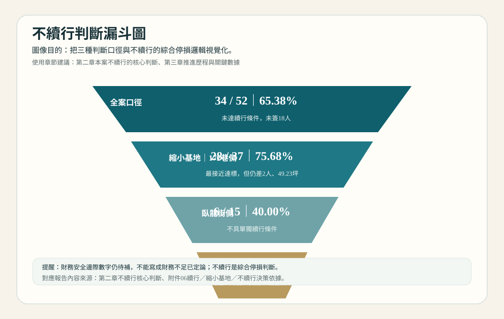
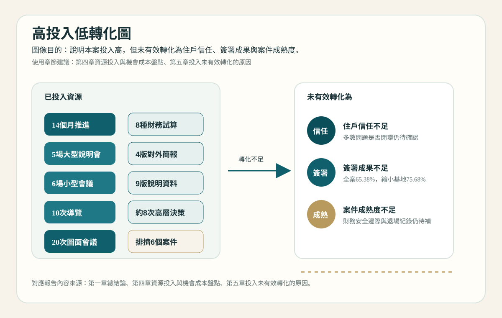
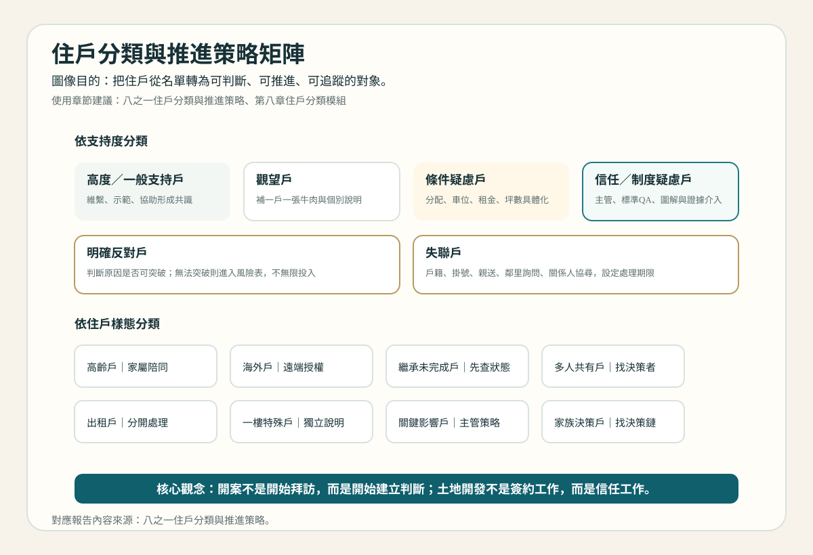
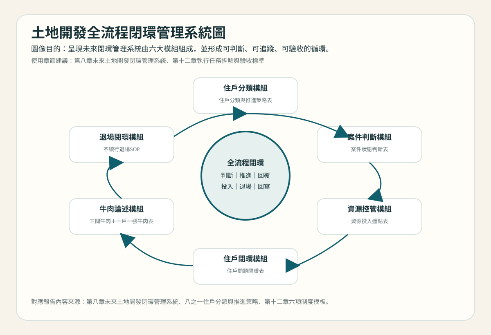
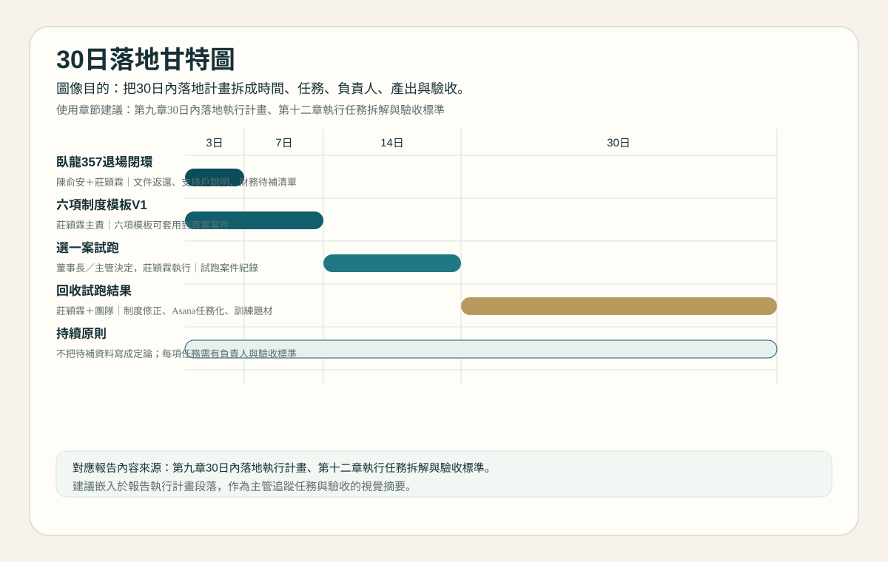

臥龍357不續行案檢討與土地開發閉環管理系統建置報告
版本：V9
日期：2026/05/03
文件性質：內部管理檢討報告，不對外使用
主要來源：V7 老闆版正式檢討總結、V8.1 董事長簡報大綱、附件01、附件05、附件06
使用限制：本報告不新增檢討題，不作為對外住戶說法；涉及財務、法律、退場與公司決策事項，仍需主管確認。
0｜老闆摘要
一、核心結論
臥龍357案不續行，不是因為公司沒有投入，而是本案在全案與縮小基地兩種口徑下均未達安全續行條件，且14個月內投入大量住戶整合、說明會、導覽、圖面、財務試算與對外資料後，仍未有效轉化成足夠的住戶信任、簽署成果與案件成熟度。
因此，本案應定義為「高投入低轉化」的綜合停損案例。
二、本案暴露的核心問題
- 開案與續行判斷缺少明確門檻。
- 住戶問題沒有完整閉環。
- 業務端沒有先想清楚 Why，就投入大量 How。
- 客戶牛肉與寶舖品牌價值沒有充分轉成住戶利益。
- 高資源投入未被即時盤點，也未及時轉成停損判斷。
- 不續行後的文件返還、支持戶交代、收執與歸檔需制度化。
三、未來要建立的系統
建議建立「土地開發案件全流程閉環管理系統」，包含五個模組：
| 模組 | 工具 | 目的 |
|---|---|---|
| 案件判斷模組 | 案件狀態判斷表 | 判斷可推、卡關、縮小基地或停損 |
| 資源控管模組 | 資源投入盤點表 | 判斷投入是否值得繼續 |
| 住戶閉環模組 | 住戶問題閉環表 | 讓每個問題有負責人、期限與回覆 |
| 牛肉論述模組 | 三問牛肉＋一戶一張牛肉表 | 先想清楚 Why，再執行 How |
| 退場閉環模組 | 不續行退場SOP | 停止也要完成通知、返還、收執、歸檔 |
四、30日內落地方式
| 時間 | 任務 | 負責人 | 產出 |
|---|---|---|---|
| 3日內 | 臥龍357退場資料補齊 | 陳俞安＋莊穎霖 | 文件返還追蹤、支持戶說明紀錄、財務待補清單 |
| 7日內 | 五項制度模板V1 | 莊穎霖主責 | 五項模板 |
| 14日內 | 選一案試跑 | 董事長／主管決定，莊穎霖執行 | 試跑案件紀錄 |
| 30日內 | 回收試跑結果並修正 | 莊穎霖＋團隊 | 制度V1修正版、Asana任務化、業務訓練題材 |
五、需董事長決策
- 是否同意建立土地開發案件全流程閉環管理系統。
- 是否同意7日內完成五項制度模板V1。
- 是否同意先選一案試跑30天。
- 是否同意臥龍357退場列為專案任務。
- 是否同意後續轉成Asana任務與業務教育訓練。
一、報告目的與總結論
已確認事實
臥龍357案已於2026/04/30確認不續行，2026/05/03通知，並預計於2026/05/04啟動文件返還作業。依附件06與V7整理，本案全案口徑為52人、34人已簽、18人未簽，簽署率65.38%；縮小基地172巷側為37人、28人已簽、9人未簽，簽署率75.68%，尚差2人、49.23坪達雙80%；臥龍街側為15人、6人已簽、9人未簽，簽署率40.00%。
本案自2025/03推進至2026/05，約14個月，投入包含5場大型說明會、6場小型會議、10次導覽、約20次圖面會議、至少8種財務試算情境、4版對外簡報、9版說明資料，以及約8次主管或董事長決策參與。
檢討判斷
本報告不是單純檢討臥龍357為何不續行，而是要把本案暴露出的問題，轉化成土地開發部未來的閉環管理系統。核心結論是：本案不續行不是因為公司沒有投入，而是投入未有效轉化成住戶信任、簽署成果與案件成熟度。
臥龍357案的管理意義在於提醒公司：土地開發案件不能只靠熱度、努力與個別執行動作推進，而必須建立從開案判斷、資源控管、住戶問題閉環、牛肉論述，到退場閉環的完整系統。
待補資料
- 正式採用財務模型檔名。
- 財務安全邊際明確數字。
- 正式決策紀錄。
- 文件返還、收執保存、未收件親送與正式歸檔紀錄。
後續行動
以臥龍357為內部案例，建立「土地開發案件全流程閉環管理系統」，並於30日內完成五項工具初版、選定一案試跑、回收試跑結果並修正。
二、本案不續行的核心判斷
圖表｜不續行判斷漏斗圖
用全案、縮小基地與臥龍街側三種口徑，呈現本案不續行的綜合停損邏輯。

已確認事實
| 判斷口徑 | 總數 | 已簽 | 未簽 | 簽署率 | 雙80%狀態 | 判斷 |
|---|---|---|---|---|---|---|
| 全案口徑 | 52人 | 34人 | 18人 | 65.38% | 未達 | 未達續行條件 |
| 縮小基地｜172巷側 | 37人 | 28人 | 9人 | 75.68% | 尚差2人、49.23坪 | 最接近達標，但仍未達 |
| 臥龍街側 | 15人 | 6人 | 9人 | 40.00% | 未達 | 不具單獨續行條件 |
172巷13號3樓為期限後補簽戶，因此早期32簽、33簽與34簽差異屬統計時間點差異。本報告採34人／52人、65.38%作為全案最後簽署口徑。
檢討判斷
本案不續行的核心，不是單純簽署率不足，而是三個條件同時成立：
- 全案與縮小基地均未達雙80%。
- 財務安全邊際仍需補明確數字，不可將財務不足寫成既定結論。
- 本案已投入大量資源，且機會成本明確存在，若繼續投入，需有更高把握與更明確續行依據。
因此，不續行應定義為「簽署門檻、縮小基地後仍未達標、財務安全、資源投入效益與機會成本」的綜合停損，而不是主觀放棄。
待補資料
- 財務安全邊際數字。
- 正式採用財務模型檔名。
- 後續成功率或續行成功機率評估。
- 正式決策紀錄。
後續行動
後續所有土地開發案應建立「案件狀態判斷表」，同時檢查簽署率、雙80%、財務安全、住戶結構、資源投入與機會成本，避免只看單一進度數字。
三、本案推進歷程與關鍵數據
已確認事實
本案推進期間約為2025/03至2026/05。重要節點如下：
| 時間 | 事件 | 資料狀態 |
|---|---|---|
| 2025/03 | 案件啟動推進 | 已確認 |
| 2025/04/19 | 第一場說明會 | 已確認 |
| 2025/05/25 | 第二次地主說明會 | 已確認 |
| 2026/01/11 | 第三次都更說明會 | 已確認 |
| 2026/02/04 | 最新都更狀況說明 | 已確認 |
| 2026/04/30 | 確認不續行 | 已確認，正式決策紀錄待補 |
| 2026/05/03 | 不續行通知 | 已確認 |
| 2026/05/04 | 預計啟動文件返還 | 待補完成紀錄 |
推進過程包含大型說明會、小型會議、策展導覽、圖面與財務版本調整、縮小基地評估、最後確認通知與文件返還安排。
檢討判斷
本案不是短期試探案，而是已投入長周期、高密度管理資源的整合案。問題不在於沒有行動，而在於每一輪行動是否有明確目標、是否能轉化成住戶信任、是否有回收成判斷資料。
待補資料
- 各重大節點正式會議紀錄。
- 圖面4版清單與對外提供狀態。
- 說明資料9版各版日期、用途與對外對象。
後續行動
未來案件應建立「重大節點紀錄表」，每次說明會、圖面更新、財務更新、縮小基地評估與不續行判斷，都要留下目的、產出、負責人與下一步。
四、資源投入與機會成本盤點
圖表｜高投入低轉化圖
整理本案14個月投入的會議、導覽、圖面、財務與對外資料，對照未有效轉化的管理結果。

已確認事實
| 類型 | 已知投入 |
|---|---|
| 推進期間 | 約14個月 |
| 大型說明會 | 5場 |
| 小型會議 | 6場 |
| 策展導覽 | 10次 |
| 圖面會議 | 約20次 |
| 財務試算 | 至少8種版本或情境 |
| 對外簡報 | 4版 |
| 說明資料 | 9版 |
| 主管／董事長決策參與 | 約8次 |
| 建築師費用 | 兆碩建築師費用50,000元 |
| 雙掛號 | 33件，整批作業暫估約2,000元含資料，實際郵資、列印、裝封與收執保存費用仍待補 |
| 可能被排擠案件 | 復興623、復興632、敦化686、忠孝199、信義364、廣州75 |
檢討判斷
本案屬於高資源投入案件，但高投入沒有有效轉化為高簽署率、高住戶信任或高案件成熟度。這代表公司不能只管理「做了多少事」，還要管理「做這些事是否有效」。
本案的低轉化不是單一原因造成，而是主責判斷、住戶問題閉環、群組經營、牛肉論述、專業資源管理與退場制度共同不足所形成的結果。
待補資料
- 團隊實際總工時。
- 各類拜訪總戶數與每次工時。
- 團隊會議總場次。
- 印刷與行政成本。
- 被排擠案件實際影響量化。
後續行動
建立「資源投入盤點表」，在開案前、第一次說明會後14天、縮小基地前與不續行前盤點已投入資源、後續投入與機會成本。
五、投入未有效轉化的原因
已確認事實
附件01整理出39項住戶歷次問題，問題分類包含分配比例、建築規劃、合約條件、稅務／地政、權利變換／協議合建、公司信任、流程進度、租金補貼、退場與文件返還等。附件01也顯示多數問題雖有部分回覆，但是否閉環仍待確認。
附件05顯示本案投入多場會議、導覽、圖面會議、財務試算、簡報與說明資料版本。V7與V8均指出本案存在「投入多但轉化不足」問題。
檢討判斷
本案投入未有效轉化，主要原因如下：
- 主責端未掌握案件狀態：進度回報不足以支撐決策，應能判斷案件是可推進、卡關、需主管介入、需縮小基地或應停損。
- 沒先想清楚 Why 就處理 How：製作資料、調整圖面、辦會議與安排導覽之前，未必先確認這些行動要解決哪個問題。
- 住戶問題沒有閉環：問題有出現、有些有回覆，但缺少負責人、期限、回覆狀態與是否閉環的完整追蹤。
- 群組沒有成為共識管理平台：群組若只作為通知工具，無法形成理解、回應與共識。
- 客戶牛肉與利益論述不足：素材很多，但未充分轉成住戶可理解的「為何要都更、為何是寶舖、為何是現在」。
- 建築師需求不清造成專業資源浪費：圖面與建築師投入多，但若用途、對象、決策點不清，就容易重做。
- 實驗型行動未完整落地：痛點調查、策展互動、小型說明會、樓長制度等若沒有目標、負責人、檢核方式與結果追蹤，就難以複製。
待補資料
- 各階段簽署轉化率。
- Line群組原始紀錄與重大訊息個別確認紀錄。
- 住戶問題最終回覆與閉環狀態。
- 圖面版本清單與各版用途。
後續行動
將上述原因分別對應到五個管理工具：案件狀態判斷表、資源投入盤點表、住戶問題閉環表、三問牛肉＋一戶一張牛肉表、不續行退場SOP。
六、業務靈魂與寶舖土地開發文化
已確認事實
V8.1已補入「業務要有靈魂：寶舖土地開發的正確態度」與「寶舖土地開發的五個文化態度」。其核心是：土地開發不能只靠資料、流程與表格推進，業務必須有信念、有態度、有 ownership，能說清楚為什麼住戶要做、為什麼是寶舖、為什麼現在該做，並對住戶問題負責到底。
檢討判斷
土地開發不是推銷合約，而是協助住戶做正確判斷。業務若只等待資料、製作表格、轉達問題，就無法帶動住戶往下一步走。業務需要把公司品牌、住戶利益、案件可行性與執行閉環連在一起。
業務要有五種基本能力：
- 有 ownership：把案件、住戶、問題與結果視為自己的責任。
- 有信念與態度：相信案件對住戶有幫助，並能面對質疑。
- 先想清楚 Why，再處理 How：知道每個行動要解決什麼問題。
- 把品牌靈魂轉成住戶利益：不是講公司多好，而是講這一戶得到什麼。
- 用閉環證明靠譜：回覆、期限、版本、紀錄、承諾與退場都要追蹤。
寶舖土地開發的五個文化態度
| 文化態度 | 定義 | 在本案的檢討意義 |
|---|---|---|
| 以住戶利益為出發點 | 不是先想怎麼簽，而是先想這個案子對住戶有什麼幫助 | 客戶牛肉與利益論述沒有被充分說清楚 |
| 對案件有 ownership | 不只回報進度，而是對每戶狀態、下一步與結果負責 | 案件狀態與未簽原因未被即時掌握 |
| 用專業建立信任 | 專業不是資料很多，而是能把複雜事情講清楚 | 部分簡單問題被複雜化，造成誤會 |
| 用透明面對問題 | 不只透明優點，也要透明限制、風險、條件與退場 | 縮小基地、財務安全、權變比較與退場說明都需更清楚 |
| 用閉環證明靠譜 | 每件承諾、問題、資料、會議與退場都要有追蹤 | 住戶問題、群組回覆、文件返還與歸檔需制度化 |
待補資料
- 業務訓練題材與案例化教材。
- 三問牛肉正式模板。
- 一戶一張牛肉表正式模板。
後續行動
將「業務要有靈魂」轉成訓練與驗收：每個案件提案前，必須完成三問牛肉與一戶一張牛肉表；每次住戶問題，都必須進入閉環表；每個重大承諾，都必須有負責人與期限。
七、六大檢討面向
已確認事實與檢討判斷
| 面向 | 核心問題 | 本案現象 | 改善方向 |
|---|---|---|---|
| 開案判斷面 | 缺少立案紅旗與續行門檻 | 全案未達標後進入縮小基地，縮小基地仍未達雙80% | 建立案件狀態判斷表，納入簽署、雙80%、財務、住戶結構與資源投入 |
| 住戶整合面 | 未簽、未入群、決策鏈與失聯未完整分類 | 群組覆蓋率約70.69%，重大訊息個別確認待補 | 建立住戶整合管理表與住戶問題閉環表 |
| 溝通論述面 | 權變／協議合建與牛肉論述未標準化 | 住戶問題集中在分配、權變、公司信任、流程等 | 建立權變／協議合建標準說明包與三問牛肉表 |
| 組織文化面 | 靠譜、創新、全透明未完全落到行為標準 | 回覆期限、資料版本、群組節奏與退場閉環不足 | 建立土地開發行為準則與閉環管理要求 |
| 管理決策面 | 缺少續行、縮小基地、不續行門檻 | 財務安全邊際待補、資源投入高、機會成本存在 | 建立案件狀態判斷表與資源投入盤點表 |
| 退場制度面 | 不續行後仍需完成文件與信任閉環 | 文件返還、雙掛號、收執、支持戶交代、歸檔待補 | 建立不續行退場SOP |
待補資料
- 群組內住戶與未入群住戶名單。
- 重大訊息個別確認紀錄。
- 權變／協議合建法務確認版。
- 退場完成清單。
後續行動
六大面向不再分別產出獨立檢討題，而是回收進「土地開發案件全流程閉環管理系統」的五大模組。
圖表｜住戶分類與推進策略矩陣
建議對應「八之一、住戶分類與推進策略」，用支持度與住戶樣態整理不同住戶的推進方法。

八、未來土地開發閉環管理系統
圖表｜土地開發全流程閉環管理系統圖
呈現未來土地開發閉環管理系統的六大模組，以及從判斷、分類、回覆到退場的循環關係。

系統名稱
土地開發案件全流程閉環管理系統
已確認事實
V8.1已將系統整理為五大模組：案件判斷、資源控管、住戶閉環、牛肉論述、退場閉環。此系統不是多做表格，而是讓每個案子能回答：現在能不能推、為什麼推、投入值不值得、住戶問題有沒有閉環、什麼時候該退場。
系統模組
| 模組 | 對應工具 | 目的 | 使用時機 | 負責人 | 產出 | 驗收標準 |
|---|---|---|---|---|---|---|
| 案件判斷模組 | 案件狀態判斷表 | 避免只靠感覺判斷續行或停損 | 每週、重大節點前 | 案件主責 | 每週案件判斷表 | 能明確標示可推、卡關、縮小基地或停損 |
| 資源控管模組 | 資源投入盤點表 | 看清已投入、後續投入與機會成本 | 說明會後14天、縮小基地前、不續行前 | 案件主責＋主管 | 資源投入盤點表 | 看得出已投入、後續投入與是否值得繼續 |
| 住戶閉環模組 | 住戶問題閉環表 | 確保每題都有回覆與追蹤 | 住戶提問後立即啟動 | 承辦＋案件主責 | 住戶問題閉環表 | 每題都有負責人、期限、回覆狀態與閉環狀態 |
| 牛肉論述模組 | 三問牛肉＋一戶一張牛肉表 | 把品牌與產品轉成住戶利益 | 提案前、拜訪前、說明會前 | 案件主責＋業務 | 牛肉論述表 | 能說清楚三個Why，並對應每戶利益 |
| 退場閉環模組 | 不續行退場SOP | 確保不續行後仍完成信任與文件閉環 | 確認不續行後 | 接手承辦＋行政／法務 | 退場完成清單 | 通知、返還、收執、親送與歸檔完整 |
檢討判斷
這套系統的目的不是增加行政負擔，而是把土地開發案從「靠個人經驗」轉為「靠系統判斷」。每個模組都必須有負責人、期限、產出與驗收標準，否則仍會停留在檢討文字。
待補資料
- 五項工具正式模板版本。
- 各模組正式負責人。
- 試跑案件與試跑紀錄格式。
後續行動
先做最小可用版本，不做大型制度工程。7日內完成五項模板V1，14日內選一案試跑，30日內回收試跑結果並修正。
九、30日內落地執行計畫
圖表｜30日落地甘特圖
將3日、7日、14日與30日內的落地任務、負責人、產出與驗收方式視覺化。

後續行動
| 時間 | 任務 | 負責人 | 產出 | 驗收標準 |
|---|---|---|---|---|
| 3日內 | 完成臥龍357退場資料補齊 | 陳俞安＋莊穎霖 | 文件返還追蹤、支持戶說明紀錄、財務待補清單 | 可回報退場是否閉環 |
| 7日內 | 五項制度模板初版 | 莊穎霖主責 | 五項模板V1 | 可套用到一個真實案件 |
| 14日內 | 選一個進行中案件試跑 | 董事長／主管決定，莊穎霖執行 | 試跑案件紀錄 | 能看出制度是否有助於判斷 |
| 30日內 | 回收試跑結果並修正 | 莊穎霖＋團隊 | 制度V1修正版、Asana任務化、QA回寫、業務訓練題材 | 可正式推廣到其他案件 |
已確認事實
V8.1已建議試跑案件包含敦化686、忠孝199、復興623，原因分別與住戶問題閉環、合約與關鍵戶判斷、外部競爭與開案判斷壓力有關。
檢討判斷
制度不應一次全面導入。先選一案試跑30天，才能確認這套系統是否真的幫助判斷，而不是增加行政負擔。
待補資料
- 董事長／主管指定試跑案件。
- 各制度負責人最終確認。
- Asana任務編號。
十、董事長需決策事項
| 決策事項 | 建議決策 | 若同意後下一步 | 負責人 | 期限 |
|---|---|---|---|---|
| 是否建立土地開發案件全流程閉環管理系統 | 建議同意 | 啟動五項工具模板製作 | 莊穎霖 | 7日內 |
| 是否先選一案試跑30天 | 建議同意 | 建議從敦化686、忠孝199、復興623擇一 | 莊穎霖＋主管決定 | 14日內 |
| 是否將臥龍357退場列為專案任務 | 建議同意 | 完成文件返還、收執、支持戶交代與歸檔 | 陳俞安＋莊穎霖 | 3日內啟動 |
| 是否導入Asana追蹤 | 建議同意 | 將五項制度拆成任務與期限 | 莊穎霖 | 30日內 |
| 是否轉成業務訓練教材 | 建議同意 | 建立三問牛肉、住戶閉環、退場SOP訓練材料 | 莊穎霖 | 30日內 |
十一、待補資料與附件
待補資料
| 待補資料 | 影響定論或補強佐證 | 說明 |
|---|---|---|
| 正式採用財務模型檔名 | 影響定論 | 支撐財務判斷依據與試算版本盤點 |
| 財務安全邊際數字 | 影響定論 | 未補前不可寫成財務不足已定論 |
| 正式決策紀錄 | 影響定論 | 支撐不續行決策完整性 |
| 已簽文件返還紀錄 | 影響定論 | 支撐退場是否閉環 |
| 雙掛號寄送與收執 | 影響定論 | 支撐文件返還與收執保存 |
| 支持戶個別說明紀錄 | 影響定論 | 支撐信任維護與退場交代 |
| 正式歸檔紀錄 | 影響定論 | 支撐案件退場完整性 |
| 圖面版本清單 | 補強佐證 | 支撐建築師投入與版本管理檢討 |
| 團隊會議總場次 | 補強佐證 | 支撐管理成本量化 |
| 印刷與雙掛號實際費用 | 補強佐證 | 支撐現金成本量化 |
| 被排擠案件實際影響 | 補強佐證 | 釐清機會成本是否可量化 |
| Line群組原始紀錄 | 補強佐證 | 補強群組是否形成共識管理 |
| Ragic個別問題最終回覆狀態 | 補強佐證 | 補強住戶問題是否閉環 |
引用附件
- 附件01｜住戶歷次問題總表：支撐住戶問題閉環不足、權變與協議合建說明需標準化、客戶牛肉論述需收斂。
- 附件05｜資源投入盤點表：支撐高資源投入、資源未有效轉化、資源投入盤點制度。
- 附件06｜續行／縮小基地／不續行決策依據表：支撐不續行是綜合停損判斷，而非單純簽署率不足。
結語
臥龍357的價值不只在於確認不續行，而在於把一次高投入但未續行的案件，轉成公司土地開發管理能力。寶舖土地開發的文化，不是把合約簽回來，而是用專業、同理、透明與閉環，讓住戶相信公司是在協助他做一個正確的未來選擇。
未來土地開發團隊要先想清楚 Why，再決定 How；先建立態度，再建立流程；先對住戶負責，再追求簽署成果。
十二、執行任務拆解與驗收標準
本章將第九章30日內落地執行計畫拆解為可派工、可追蹤、可驗收的任務表。以下任務僅作為內部執行拆解，不新增檢討題；涉及財務、法律、退場完成狀態與公司決策者，仍依前章待補資料與主管確認為準。
12.1 三日內｜臥龍357退場閉環
| 子任務 | 主責 | 協助 | 產出檔案 | 完成標準 |
|---|---|---|---|---|
| 確認33件文件返還狀態 | 陳俞安 | 行政 | 臥龍357_已簽文件返還追蹤表 | 33件逐戶標示寄送狀態、收件狀態、收執狀態；未完成者標示原因與下一步 |
| 確認05/01文件是否收取 | 陳俞安 | 莊穎霖 | 臥龍357_05月01日文件確認紀錄 | 明確標示05/01簽署文件是否收取；若未收取，標示不納入返還或後續處理方式 |
| 建立雙掛號收執保存紀錄 | 陳俞安 | 行政 | 臥龍357_雙掛號收執保存紀錄 | 每件雙掛號都有收據、收執或追蹤編號；掃描或拍照後集中歸檔 |
| 支持戶個別說明 | 莊穎霖 | 陳俞安 | 臥龍357_支持戶個別說明紀錄 | 支持戶逐戶標示是否已說明、說明日期、說明方式、後續疑問與負責人 |
| 退場完成清單 | 陳俞安 | 莊穎霖、行政 | 臥龍357_退場完成清單 | 通知、返還、收執、親送、支持戶說明、歸檔均有狀態；未完成項目不得標示完成 |
12.2 七日內｜五項制度模板 V1
| 工具 | 主責 | 產出檔案 | 必備欄位 | 完成標準 |
|---|---|---|---|---|
| 案件狀態判斷表 | 莊穎霖 | 土地開發_案件狀態判斷表_V1 | 案件名稱、簽署率、雙80%、關鍵戶、未簽原因、財務安全、資源投入、機會成本、下一步判斷、是否需主管決策 | 可用於每週判斷案件為可推、卡關、縮小基地或停損 |
| 資源投入盤點表 | 莊穎霖＋陳俞安 | 土地開發_資源投入盤點表_V1 | 推進期間、拜訪、會議、導覽、圖面、財務試算、簡報、行政成本、主管時間、機會成本、待補資料 | 可看出已投入、後續投入與是否值得繼續 |
| 住戶問題閉環表 | 陳俞安 | 土地開發_住戶問題閉環表_V1 | 提問日期、住戶／戶別、問題分類、問題摘要、負責人、回覆期限、回覆內容、是否需主管／法務確認、是否閉環、是否回寫QA | 每一題都有負責人、期限、回覆狀態與閉環狀態 |
| 三問牛肉＋一戶一張牛肉表 | 莊穎霖＋業務 | 土地開發_三問牛肉與一戶一張牛肉表_V1 | 為何要都更、為何是寶舖、為何是現在、每戶利益、每戶疑慮、反對理由、下一步行動、負責人 | 能說清楚三個Why，並能對應每戶住戶利益與下一步 |
| 不續行退場SOP | 陳俞安＋行政／法務 | 土地開發_不續行退場SOP_V1 | 決策確認、通知、支持戶說明、文件造冊、雙掛號、收執保存、未收件親送、退場完成清單、歸檔、回寫檢討 | 可依SOP完成通知、返還、收執、親送與歸檔，不把待補事項寫成完成 |
12.3 十四日內｜選一案試跑
| 候選案件 | 建議套用工具 | 試跑目標 | 決策需求 |
|---|---|---|---|
| 敦化686 | 住戶問題閉環表、案件狀態判斷表 | 檢查住戶問題、產品規劃與群組經營是否能形成閉環，並判斷案件下一步 | 董事長／主管確認是否列為第一個試跑案件，並指定案件承辦 |
| 忠孝199 | 三問牛肉＋一戶一張牛肉表、案件狀態判斷表 | 檢查合約、華廈／公寓整合與關鍵戶接觸是否有明確利益論述與下一步 | 董事長／主管確認是否優先處理關鍵戶與合約口徑 |
| 復興623 | 案件狀態判斷表、資源投入盤點表 | 檢查外部競爭與開案判斷壓力，判斷是否值得持續投入資源 | 董事長／主管確認資源投入上限與下一階段判斷門檻 |
12.4 三十日內｜回收試跑結果
| 任務 | 主責 | 產出 | 完成標準 |
|---|---|---|---|
| 試跑檢討 | 莊穎霖 | 試跑案件檢討紀錄 | 明確列出試跑案件使用哪些工具、解決哪些問題、哪些欄位不足、是否有助於案件判斷 |
| 模板修正 | 莊穎霖＋團隊 | 五項制度模板V1修正版 | 修正後模板可直接套用下一個案件，並保留版本日期與修改重點 |
| Asana任務化 | 莊穎霖＋陳俞安 | Asana任務清單 | 每項制度都有任務名稱、負責人、期限、產出檔案與驗收標準 |
| 業務訓練整理 | 莊穎霖 | 業務訓練題材初稿 | 至少包含三問牛肉、住戶問題閉環、群組管理、不續行退場與案件判斷案例 |